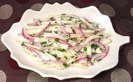

|
Celery Root SaladGermany - Sellerisalat | ||||
| Serves: Effort: Sched: DoAhead: |
8 salad ** 2 hrs Best |
Salads of cooked celery root are very popular in Germany and Poland. They are moderately sweet, nutritious and very tasty - an excellent salad for buffet. | |||
|
3 5 1/4 ---- 1/3 2 1/4 1/2 1/4 ---- |
# oz c --- c t c t t --- |
Celery Roots (1) Red Onion Parsley, flat leaf -- Dressing Wine Vinegar, white German Mustard Oil (2) Salt Pepper ---------- |
Make: - (2 hrs - 45 min work)
|